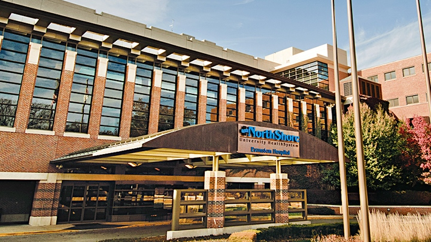
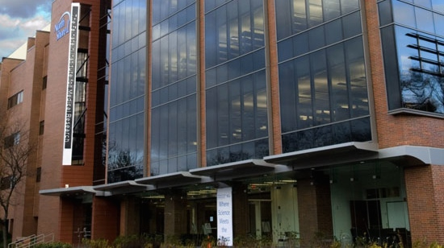
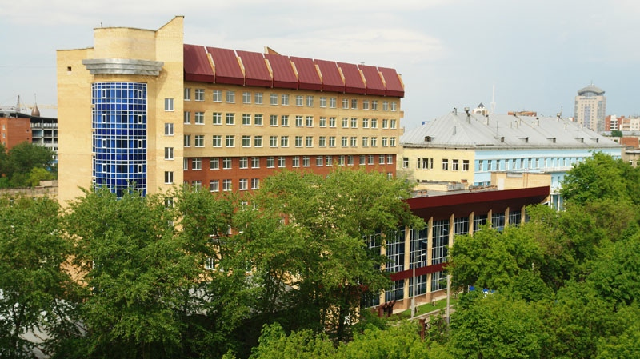

Experience
Rheumatology Fellow
Minneapolis, Minnesota
July 2013-present
NIH T32 grant scholar
(Division of Renal Diseases, PI: Dr. Hassan Ibrahim)
Clinician-Educator
Chicago, Illinois
July 2012-June 2013
Instructed North Shore Internal Medicine residents, performed Hospitalist duties
Clinician educator at Univesity of Chicago, Pritzker School of Medicine

Internal Medicine Resident
Chicago, Illinois
July 2009-June 2012
Internal Medicine Program Representative, Institutional G.M.E. Committee
Member, Committee for Patient Handoffs

Research Assistant
Manhasset, New York
March 2009-May 2009
Research assistant for the Study of Cognitive Function in SLE (Autoimmune and Musculoskeletal Disease Group, PI: Dr. Betty Diamond)

Education
Minneapolis, Minnesota
September 2014-present
Expected graduation: June 2016
Master's of Science in Clinical Research candidate
Moscow, Russia
September 2006-June 2008
Doctor of Medicine degree awarded
Graduated with honors

Perm, Russia
July 2009-June 2012
Completed years three and four of the six-year Doctor of Medicine degree program
Transferred to I.M. Sechenov Moscow Medical Academy

Grinnell, Iowa
August 2003-May 2004
Completed 2 semesters of undergraduate coursework in sociology and neuropsychology on a competitive US government-sponsored academic exchange scholarship (UGRAD)
Publications
Epidemiology of Chronic Low Back Pain in US Adults: National Health and Nutrition Examination Survey 2009-2010.
Anna Shmagel, Robert Foley, Hassan Ibrahim
Granulomatosis With Polyangiitis (Wegener’s) Presenting as a Periaortic Mass
Anna Shmagel, Rediet Kokebie, Catherine Meyer
Sustainability and Effectiveness of a Quality Improvement Project to Improve Handoffs to Night Float Residents in an Internal Medicine Residency Program.
Cemal Yazici, Hany Abdelmalak, Shanu Gupta, Anna Shmagel, Eman Albaddawi, Vivian Tsang, Steven Potts, Vineet M. Arora
Presentations
Illicit Drug Use in US Adults with Chronic Low Back Pain: NHANES 2009-2010.
Anna Shmagel, Robert Foley
Presented at: ACR/ARHP Annual Meeting, San Francisco, CA, 2015
Prescription Medication Use in Community-Based US Adults with Chronic Low Back Pain: NHANES 2009-2010.
Anna Shmagel, Robert Foley
Presented at: ACR/ARHP Annual Meeting, San Francisco, CA, 2015
Single Cell RNA-Seq Analysis of Citrullinated Alpha-Enolase Peptide-Specific B Cells in RA.
Yogita Ghodke-Puranik, Na Zhang, Jessica M. Dorschner, Anna Shmagel, Zhongbo Jin, Philip
Titcombe, Timothy B. Niewold, Daniel Mueller
Poster presented at: ACR/ARHP Annual Meeting, San Francisco, CA, 2015
Spontaneous pneumothorax in early scleroderma.
Anna Shmagel, Maja Delibasic
Poster presented at: American College of Physicians Illinois Chapter Annual Meeting, Chicago, IL, 2011
“A Nasty Rash”. Antiepileptic drug hypersensitivity syndrome.
Maja Delibasic, Anna Shmagel, Naitik Sheth, Vidhya Vivek, Alfred Amin, Nataliya Kozodoy, Rahil Shaikh
Poster presented at: American College of Physicians Illinois Chapter Annual Meeting, Chicago, IL, 2011
Using quality improvement techniques to improve handoffs to night float residents: development of the 10D model.
Cemal Yazici, Hany Abdelmalak, Anumeha Gupta, Anna Shmagel, Shanu Gupta, Bhanu Pisini, Maged Attia Saad, Zvezdana Bogojevic, Firas Zakaria, Shazia Shahzaad, Muralidhar Yerramadha, Eman Albaddawi, Steven Potts, Vineet Arora
Presented at: Society of General Internal Medicine Meeting, Chicago, IL, 2009/10
The role of body weight in response to vitamin D repletion therapy: a retrospective study.
Anna Shmagel, Catherine Meyer
Poster presented at: American College of Physicians Illinois Chapter Annual Meeting, Chicago, IL, 2009
Epidemiologic characteristics of US adults with chronic low back pain: NHANES 2009
Anna Shmagel, Robert Foley
Oral presentation at Citywide Research Conference, Minneapolis, MN 2015
Effects of B-cell depleting therapy in rheumatoid arthritis: insights into mechanisms of disease.
Anna Shmagel, Daniel Mueller
Oral presentation at Citywide Journal Club, Minneapolis, MN, 2014
Weak, weaker, why? A case of statin-induced HMG-CoA reductase Ab-positive myositis.
Anna Shmagel, Hollis Krug
Oral presentation at Citywide Case Conference, Minneapolis, MN, 2013
Clinical outcomes of remission induction therapy for severe ANCA-associated vasculitis: who doesn’t respond?
Anna Shmagel, Peter Schlesinger, Anne Minenko
Oral presentation at Citywide Journal Club, Minneapolis, MN, 2013
Journal Club: Levothyroxine dose and risk of fractures in older adults: a nested case-control study.
Irina Komarova, Anna Shmagel, Kambiz Zorriasateynzadeh, Steven Potts, Shanu Gupta, Jane Jih
Presented at Medicine Journal Club, Mercy Hospital, Chicago, IL, 2011
Lung Cancer.
Anna Shmagel, Seshan Subramanian
Presented at Multidisciplinary Tumor Board, Mercy Hospital, Chicago, IL, 2011
Atrial septal defects in adults.
Ahmad Alsibai, Deepa Dharanipragada, Maged Saad, Anna Shmagel, Ming Hwang
Presented at Cardiology Team Conference, Mercy Hospital, Chicago, IL, 2010
Pseudotumor Cerebri.
Vasin Jungtrakoolchai, Anna Shmagel, Eman Albadawi, Shanu Gupta, Michael McDonnell
Presented at Medicine Case Conference, Mercy Hospital, Chicago, IL, 2009
Research
July 2014-Present
University of Minnesota Division of Renal Diseases, Minneapolis, Minnesota
Funded by NIH T32 Grant, PI: Dr. Hassan Ibrahim, Key Mentor: Dr. Robert Foley
Current Projects
Medication use patterns in US adults with chronic low back pain (NHANES database).
While multiple analgesics are marketed and routinely used in patients with chronic low back pain, little is known about comparative effectiveness and long-term safety of different classes of analgesics. We are using multivariate models to estimate the current analgesic use and prescription patterns in the US, starting with NHANES data.
Spinal bone mineral density (BMD) in subjects with chronic low back pain (NHANES database).
Chronic low back pain is multifactorial, with a number of behavioral risk factors that may also be associated with low BMD. We are exploring the relationship between spinal BMD and chronic low back pain using the comprehensive data on BMD in the US population available through NHANES.
The role of uric acid and urate-lowering medications in renal transplant survival.
Hyperuricemia has been associated with shorter renal transplant survival. It remains unclear whether urate-lowering therapy improves transplant survival. We are designing a cohort study to evaluate renal transplant survival in hyperuricemic patients treated with urate-lowering therapy, using over twenty years of prospective data from the University of Minnesota kidney transplant registry.
January 2014-Present
University of Minnesota Division of Rheumatic and Autoimmune Diseases, Minneapolis, Minnesota
Trained in laboratory research methods, including tetramer enrichment technique and flow cytometry
Current Projects
Utility of citrullinated-peptide antigen tetramers as biomarkers of clinical response to RA therapy.
Expansion of autoreactive, citrullinated peptide-specific B lymphocytes has been described in RA, however the role of these cells in progression of disease remains unclear. This is a prospective study that will evaluate citrullinated peptide-specific switched memory B cell counts in RA patients overtime. The study aims to establish the predictive value of these cells in response to RA therapy.
March 2009-May 2009
Feinstein Institute for Medical Research, Manhasset, New York
Recruited and supervised patients for the Study of Cognitive Function in SLE
Entered and analyzed data for the Study of Cognitive Function in SLE and the SLICC cohort
March 2002-August 2003
Perm Regional AIDS Center, Perm, Russia
Assisted with regional coordination of HIV control and prevention efforts
Assisted with data collection and analysis for HIV epidemiologic research studies